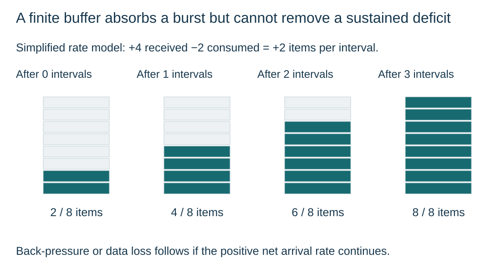

Buffers absorb temporary differences in transfer rate
S3.04.A01
Visual overview
A finite buffer absorbs a burst but cannot remove a sustained deficit

Visual transcript
- Illustrative buffer capacity: 8 items. It starts with 2 items; 4 arrive and 2 are consumed in each interval.
- Occupancy at interval boundaries is 2, 4, 6, 8: a net gain of 2 items per interval.
- Once full, further arrivals must be delayed or may be lost. The receiver still consumes only 2 items per interval.
Core explanation
Temporary storage between different rates
A buffer temporarily holds data during transfer. It lets a sender’s burst wait while a receiver consumes data at its own rate.
Capacity and related roles
- Finite capacity: Buffer capacity is finite. If arrivals keep exceeding removals, it fills. The sender must wait or data may be lost; buffering does not increase the receiver’s sustained rate.
- Printer example: The printer receives blocks into a buffer while the CPU does other work. A device driver translates device-specific commands; a print queue orders waiting jobs. Neither role is the buffer itself.
Follow the waiting blocks
| Time | Event | Blocks still in buffer |
|---|---|---|
| 0 s | Sender places P1, P2, P3 in an empty buffer | P1, P2, P3 |
| 1 s | Receiver removes P1 | P2, P3 |
| 2 s | Receiver removes P2 | P3 |
| 3 s | Receiver removes P3 | Empty |